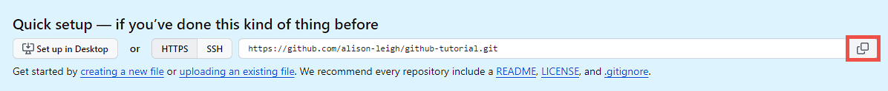

About MongoDB
What is MongoDB?
MongoDB is a NoSQL database that stores data in flexible, JSON-like documents. It means fields can vary from document to document and data structure can be changed over time.
What is MongoDB's purpose?
The purpose of MongoDB is to provide a scalable, high-performance, open-source, document-oriented database that bridges the gap between key-value stores (which are fast and highly scalable) and traditional RDBMS systems (which provide rich queries and deep functionality).
Why is MongoDB important?
MongoDB is important because it offers a scalable and flexible architecture, supports rich queries, robust indexing, and real-time aggregation. It is designed for modern application developers and for the cloud era. No database makes it easier to build applications than MongoDB.
Creating and Cloning a GitHub Repository
Create a New Repository on GitHub
- Sign in to GitHub
- Create a New Repository
- Click on the "+" icon in the top right corner and select "New repository".
- Fill in the repository details and click "Create repository".
Clone the Repository
- From your repository's page, copy the HTTPS url. It will end in .git. 
- Create a new window in VS Code
- File > New Window or the shortcut Ctrl + Shift + N
- On the welcome screen, click "Clone Git Repository..."
- Click "Clone from Github" when it appears near the search bar above.
- In the bar that appears at the top of the window, paste your repository's HTTPS url.
- Choose where to save the repository on your computer and click "Open".
Basic Git Operations in VS Code
Perform Basic Git Operations
- Check Status: View the Source Control sidebar to see changed files.
- You can use the shortcut Ctrl + Shift + G
- Add Files: Select the files to "Stage" them for a commit.
- Commit Changes: Enter a commit message in the message box and click the "Commit" button.
- Push Changes: Click on the ... button, click "Pull, Push", then "Push" to upload your commits to your remote repository.
- Pull Changes: Click on the ... button, click "Pull, Push", then "Pull" to update your local repository with the latest changes from the remote repository.
Branching with VS Code
Use VS Code to Create and Switch Between Branches
- Create a New Branch: Click on the branch name (by default, this is "main") in the bottom left corner of the VS Code window, then select "Create new branch...", and enter a name for the branch.
- Switch Between Branches: Click on the branch name in the bottom left corner of the VS Code window and select the branch you want to switch to.
Understand the Concept of Branching
Branching allows you to diverge from the main line of development and work on new features or fixes without affecting the main branch. Once you're done, you can merge your changes back to the main branch.
Working with Remote Repositories
- Add a Remote Repository: Use the command
'git remote add [name] [repository url]'in the terminal. - Manage Remotes: Push to and pull from remote repositories by selecting the appropriate remote branch from the Source Control sidebar.
Pull Requests and Code Reviews within VS Code
Create Pull Requests
- Push your Branch to GitHub.
- Navigate to your repository page on GitHub, and you'll see a prompt to create a pull request for your branch. Follow the instructions to create it.
Review and Discuss Pull Requests
On GitHub you can review changes, discuss with teammates, and make further commits if necessary. Once approved, you can merge the pull request.